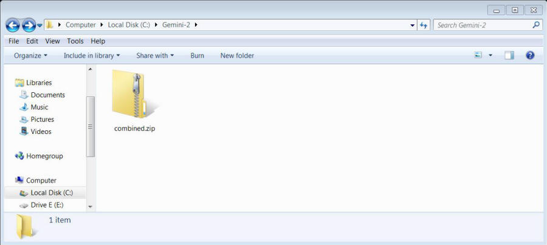
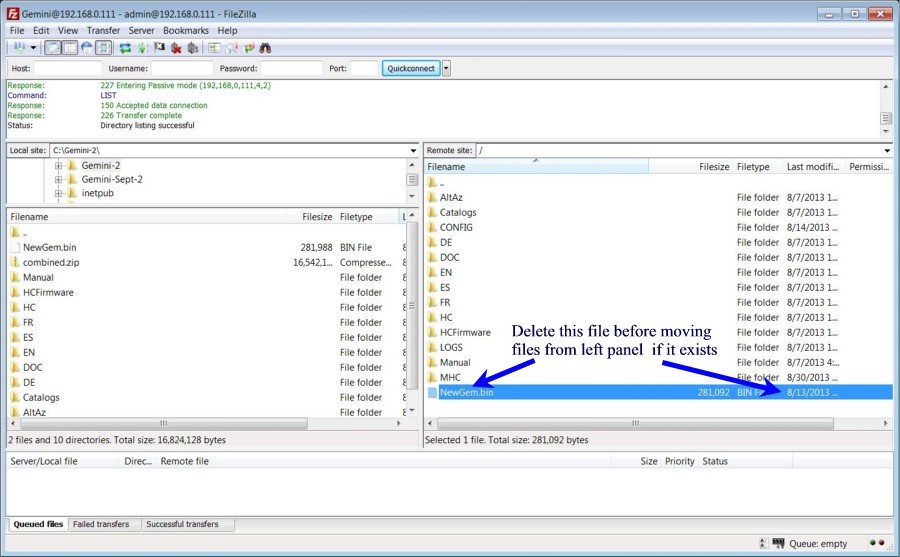
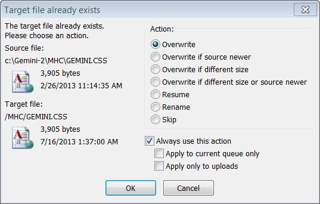

| If your network Default Gateway is http://192.168.1.1 then it would be best if you configured your laptop and the Gemini-2 to a default gateway of http://192.168.0.1 before doing this update. Here are instructions on configuring Windows and XP . The reason for this is it is about a 99% chance that the Gemini-2 is going to default back to http://192.168.0.111 after this update. If your network does not match then you will not be able to reconnect to it. |
| NEW-RELEASE: Please note that a new release of the hand controller and main firmware has has been released. If you already installed the Aug 27, 2013 firmware with the Aug 27 Hand controller firmware, there is no reason to reinstall most of the firmware. You just need to install the Oct 25 NewGem.bin and Sept 30 gemhc.bin files to be up-to-date. This fixes the PAA, Identify and Bookmark functions. Also, the tactical buttons have been activated for the balance screen and also the set limits screen in the hand controller. To install it, download the file. Then unzip it to a clean directory, It contains both files listed above. Upload the gemhc.bin file into the Gemini-2 into the HCFirmware directory. You can do the with FileZilla, Windows File Manager (use ftp://admin@gemini) or the web interface using the SDcard Tab http://gemini/sd.cgi upload feature. If using the web interface, after clicking on the SDcard tab, single click on HCFirmware directory the use the browse and send buttons to upload the file. After it is uploaded, unplug the hand controller and plug it back in. This will cause it to upload into the hand controller, and be flashed into the processor. After the hand controller is updated, use the same process but put the NewGem.bin file at the root of the SCcard, not in any directory. Then go to the Firmware/SRAM tab and select the Newgem.bin file and then Flash it. After this is done, turn off the Gemini-2 and back on to synchronize the hand controller and main unit. These updates is already included in the combine file after Oct 25, 2013, so if you do the full upgrade, you will get the latest firmware. If you did the firmware updates on the page prior to Oct 25, 2013, then you only need to follow the instructions in the paragraph. Here is a small movie of the process. |
|
In a nutshell here is what we are going to do. 1. Unplug the hand controller 2. Create an empty directory 3. Download the combined.zip file into the empty directory. 4. Unzip the combined .zip file in the empty directory. 5. Upload the extracted files to the micro SDcard in the Gemini-2 6. Use the web interface to tell the Gemini-2 to program itself with the new NEWGWM.bin file 7. Reset the SRAM 8. Plug the hand controller back in and let it update, it's firmware and button files. 9. Then install the catalog files into the HCFirmware directory of the main unit and let the hand controller upload them as a separate function. |
| This update takes a long time to install. If you wish, you may put the Gemini-2 into the terrestrial tracking mode and unplug the motors. The Gemini-2 will not be damaged by being turned on without the motors connected. The terrestrial mode is to keep the Gemini-2 from beeping continually, with the motors disconnected. Also take a note of the catalogs that are already in your Hand Controller. If you already have them, you may not need to upload them again. See Step 20 below for more on this. |
This set of instructions assumes that you have already downloaded and installed FileZilla FTP. If you have not, then see Installing-FileZilla and then come back here. Please use the Client version of FileZilla. You are also going to need some kind of file unzipping program. I recommend 7Zip as it is free for Windows or Kela for Mac (which uses the 7zip engine) and is free. Just download and follow the prompts the installation prompts. It also assumes that you know how to connect the Gemini-2 to your computer or network. If you don't see connecting to Ethernet port. |
Please do not forget to install the latest ASCOM driver for use with this Firmware upgrade. See Gemini-2 -->USB and ASCOM drivers on menu bar above. |
I created a movie that demonstrates the installation process. A Flash version or a Windows.exe version is available |
1. Please un-plug the hand controller. |
2. Before you start, you need to make an empty directory to download the updated firmware into. I suggest creating one at C:\Gemini-2. |
3. You will need to download the program. Now 1 of the three below windows should pop up depending which Web browser you are using. Click this link to start downloading combined.zip
|
| 4. After doing one of the above save options, you should have a window that looks like Fig 1 below. For you MAC users, you will have to use what ever MAC provides in place of File Explorer that windows uses, I think it is called the "Finder." |
 Fig 1 - click on image to see larger image |
5. In the next figure (Fig 2), you will be using 7-Zip to extract all the files into the same directory as the combined.zip file.
|
 Fig 2 |
4. The directory should look like below, if you used the "Extract here option"  (I
have Large Icons selected under more options (I
have Large Icons selected under more optionson the right top menu bar.) |

Fig 3 - Click on image to open full page image |
5. Now right click on the combined.zip folder/file, and either use Cut and paste it in another directory on the hard drive or delete it. Your choice as we will not need it anymore. You can always download it again. |
6. Now you need to open up Filezilla. |
7. Click on the File and select Site manager. A window similar to Fig 4 should open. |

Fig 4 |
8. Fill out the form with these values:
|
9. A window similar to figure 5 should open. You will need to change the Local Site to C:\Gemini-2. Also under View, make sure that "Transfer Queue is selected. |
|||||||||||||||||||||||||||||||||||||||

Fig. 5 |
|||||||||||||||||||||||||||||||||||||||
10. Now in the Right panel and check to see if a NewGem.bin or a HGM_Gem.bin or a Cur_Gem.bin file exist. It it does, Right mouse click on it and select delete. This will keep you from loading older firmware. See Fig 6 below. |
|||||||||||||||||||||||||||||||||||||||
 Fig 6 |
|||||||||||||||||||||||||||||||||||||||
11. Now in the Left window (Local Site) highlight all the directories and files as shown below To do this: Click on the top file or directory, Then press the shift key down, and while holding it down, click the last file in the left pane. See Fig 7 |
|||||||||||||||||||||||||||||||||||||||
 Fig. 7 |
|||||||||||||||||||||||||||||||||||||||
|
12. After they are highlighted, right mouse click and select upload. The next window (Fig 8) will pop up. Make sure Overwrite is selected, the select the check box "Always use his action" and then click OK. Important!, Please check the date of the NewGem.bin file on the right side and make sure it is the same date as the NewGem.bin file on the left side. |
|||||||||||||||||||||||||||||||||||||||
 Fig 8 |
|||||||||||||||||||||||||||||||||||||||
|
Fig 9
|